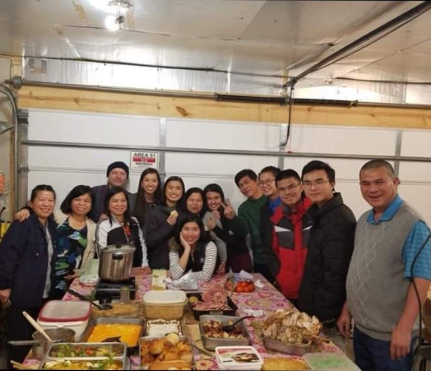

A Little Bit About Me And My Family
As I stated on the home page, I am a junior that is currently attending the Dayton Regional STEM School. I live in a house with 4 other people, my brother who used to attend the Dayton Regional STEM School, my mom and dad who work at the same company together, and my aunt who also works at the same place as my mom and dad. In my family my mom usually cooks dinner, lunch, and breakfast, my aunt bakes us snacks at night, my dad works in the garden, and my brother and I just play and help our parents and aunt when they need help. I like to think of myself as a calm and very optimistic person. I tend to not like to stress out too much so I try my best to plow through any hard times that I may go through with the mindset that there will be something better in store for me later.
Hobbies
I like to play games and watch anime/read manga. When I am at home, I spend most of my time playing games on my computer. These games include League of Legends, CS:GO, Minecraft, Terraria, and many mmorpgs. I also like watching anime and I usually watch anime
when I do not feel like playing anything.
Aside from playing games and watching anime, I do like to go outside. I've liked to play basketball snice I was in the 5th grade although I do not play for a team. I also enjoy playing volleyball with some of my friends from church and I tend to go outside and practice. I also enjoying taking walks to my local highschool and back as it allows me to take my mind off of life and allows me to destress.
At my church, I tend to play a lot of ping pong with the adults and some of the kids as it is a fun game where we all get to bond with each other. I am also in my church's youth group called TNTT (Thieu Nhi Thanh The). In TNTT, we have a lot of fun at camps and retreats while learning about God.
TNTT also helps me to build my leadership skills which will help me alot in the future. I also like programming and spend some of my time learning new programming languages and learning how to use game engines.
Future Careers
In the future, I really want to have a career in computer science, preferably as a programmer. I am also interested in the game design field as well snice I find designing and creating games can be pretty fun and enjoyable as you can get pretty creative. If I cannot achieve a career within the computer science field, then I would like to become an computer engineer as creating robots and computers seems like a interesting thing to do.